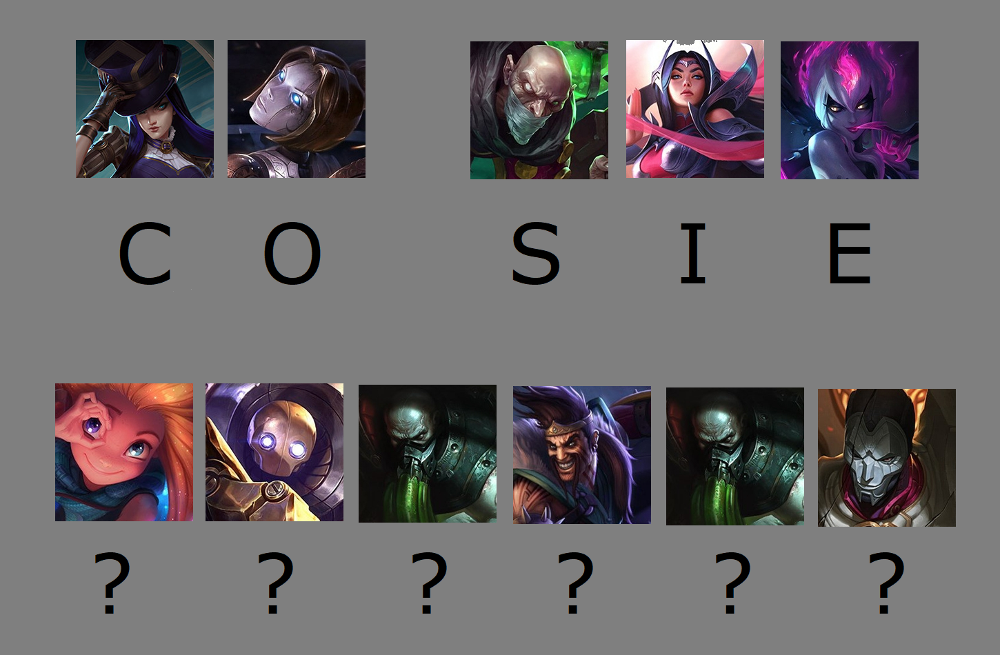
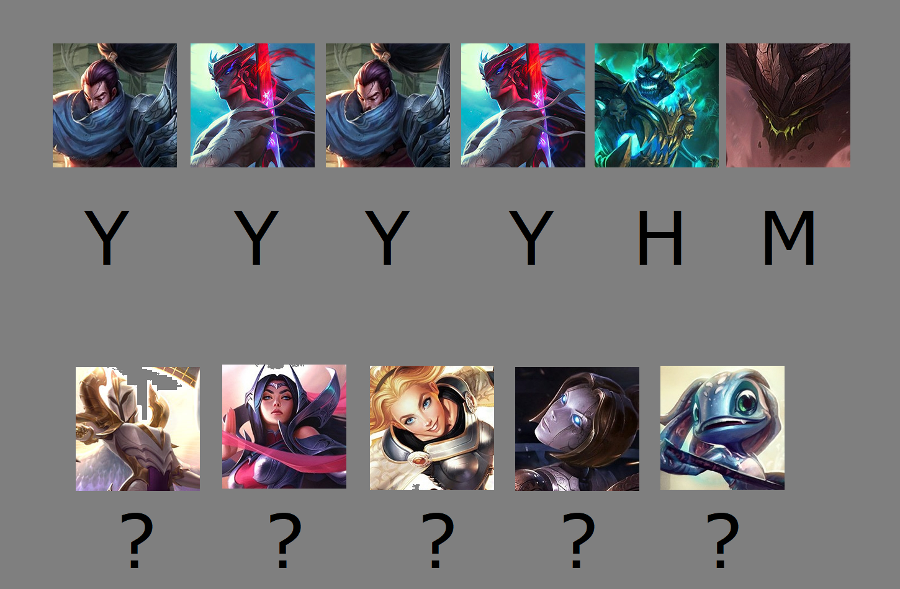

Przechodzisz na drugą stronę jaskini i rzeczywiście po drodze nic się nie stało. Zadowolona z własnej analizy, podchodzisz do miejsca, gdzie znajduje się fragment
klucza. Niestety, nie jest on tak łatwo dostępny jak miałaś nadzieję. Ta część jaskini jest znacznie gorzej oświetlona, przez co nie od razu dostrzegasz wszystkie szczegóły.
Sam fragment zaś leży w dziurze wyrytej w ścianie, jednak oddziela go od ciebie pewnego rodzaju pole siłowe,
które zdaje się zatrzymywać wszystko na swojej drodze z wyjątkiem światła. Musi być jednak jakiś sposób, żeby go zdobyć, więc zaczynasz przyglądać się dokładniej ścianie.
Spostrzegasz, że w okolicy miejsca, w którym przechowywany jest klucz ściana zmienia nieco swój kolor. Pukasz w ścianę, żeby upewnić się w swoich spotrzeżeniach i tak, masz rację!
Ten kolor, kształt i strukturę rozpoznasz wszędzie. To bruk! Z brukiem radziłaś sobie nieraz, co dodaje ci sił do dalszych działań. Cały czas stojąc w półmroku, podejmujesz kolejne działania.
No raczej. Po co miałabyś nawalać łapką w skałę? Czy od tego miałaby pęknąć?? Phi. Szybko odrzucasz słabą decyzję i przechodzisz do oględzin pokoju. Początkowo omiatasz wzrokiem podłogę,
jednak nie zauważasz na niej nic wartościowego: trochę ziemi, kamyki, standardowy wystrój podłogowy jaskini. Jednak gdy zaczynasz przyglądać się ścianom i przechodzić wzdłuż nich,
powoli wydobywasz kształty znajdujące się na nich. Są to dziwnego rodzaju symbole, zaś niektóre z nich są już podpisane. Wnioskujesz, że musi być to pewien zapomniany już język,
jednak dlaczego część z symboli jest już przetłumaczona? Czy ktoś już był tu wcześniej? Ponieważ jednak nie wszystkie symbole są przetłumaczone, chyba nie udało mu się do końca
rozszyfrować mądrości w nich zawartych. Spoglądasz na nie, próbując znaleźć pewien wzór i odczytać zostawioną tu wiadomość.
Czujesz, że takie jest twoje powołanie, do tego właśnie się narodziłaś. Przygotowujesz swoją pięść, zbierasz w sobie energię, bierzesz głęboki wdech i... zaczynasz nawalać skałę.
Skała zdaje sobie nic z tego nie robić, jednak ciebie to nie przeraża. Żywa determinacja płynie w twoim organiźmnie niczym krew, twój wzrok przestaje dotrzegać cokolwiek poza skałą.
Skała to twój wróg. Nie spoczniesz, póki ona nie padnie. Twoja pięść niczym wściekły wąż sama wyszukuje słabe punkty przeciwnika i stara się przeniknąć jego obronę. Pada cios za ciosem,
nieustraszona pięść naprzeciw niewzruszonej skały. W końcu efekty zaczynają być widoczne - skała zaczyna się kruszyć! Dokłada to tylko oliwy do twojego wewnętrznego ognia, atakujesz z jeszcze
większą natarczywością. Skała, ewidentnie na przegranej pozycji, decyduje się jednak na desperacki ruch. Ukrusza jeden ze swoich fragmentów w taki sposób, aby uderzająca tam twoja pięść
ześlizgnęła się na bok. Zanim jesteś w stanie dostrzec manewr swojego przeciwnika, twoja ręka już leci na bok, a razem z nią i ty sama. Ostatni obraz, który pozostał ci w głowie, wyglądał
mniej więcej tak:
Przewróciwszy się, leżysz na ziemi, lekko zmęczona,
ale wciąż chętna do walki. Gdy tak leżysz, dostrzegasz jednak dziwne kształty na ścianach. Symbole, niektóre z nich podpisane, które zdają się tworzyć dziwne wyrazy. Stwierdzasz, że
może dasz skale chwilę odsapnąć, zaś sama, lekko zaciekawiona, decydujesz się rozwikłać ten archaiczny szyfr.
Pierwsza przetłumaczona część jak i ta zakodowana wygląda następująco:

Po chwili rozpoznajesz już zakodowaną część. Jest nią:
Dręczy cię jakieś dziwne przeczucie. To chyba przeczucie pomyłki.
O! Co za miłe uczucie. To uczucie posiadania racji.
Skoro pierwsza część tak dobrze ci poszła, czemu by nie zająć się kolejną?
Dręczy cię jakieś dziwne przeczucie. To chyba przeczucie pomyłki.
O! Co za miłe uczucie. To uczucie posiadania racji.
Dobra robota ja! To już chyba ostatni fragment.

Dręczy cię jakieś dziwne przeczucie. To chyba przeczucie pomyłki.
O! Co za miłe uczucie. To uczucie posiadania racji.
Super! Po odczytaniu wszystkich wiadomości, mądrość ukryta w symbolach brzmi następująco: "Zbuduj własny kilof". Nie brzmi to zbyt mądrze, ale z pewnością się przyda.